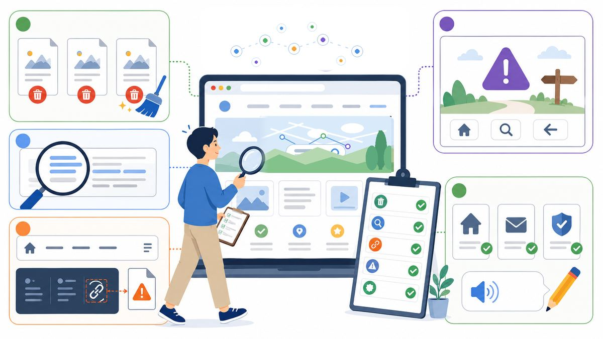
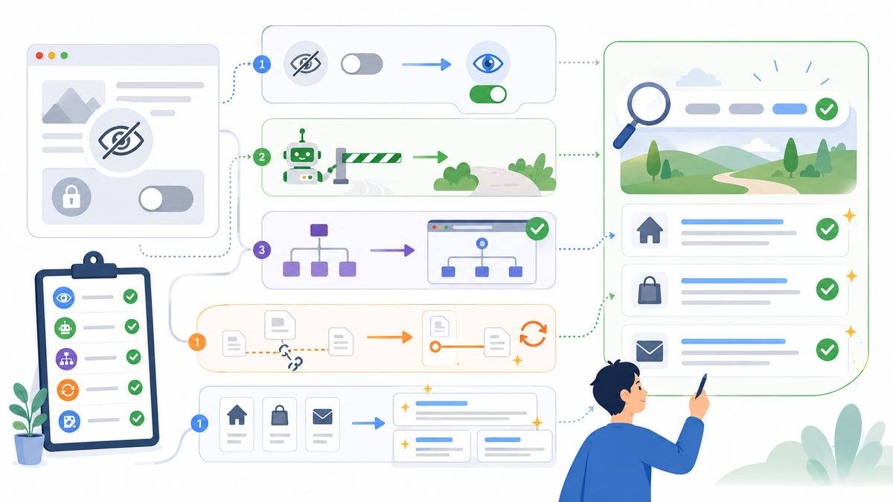
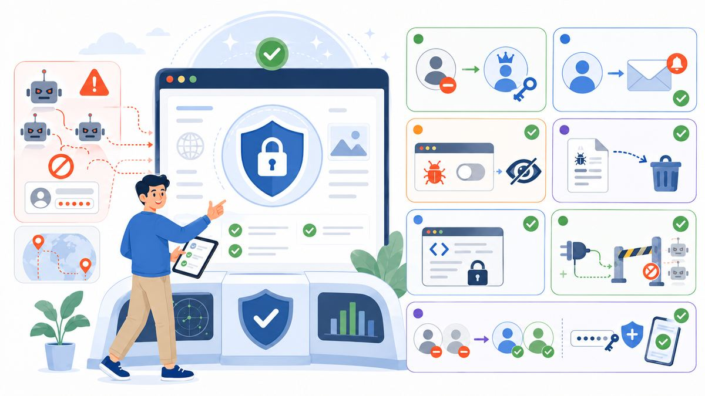
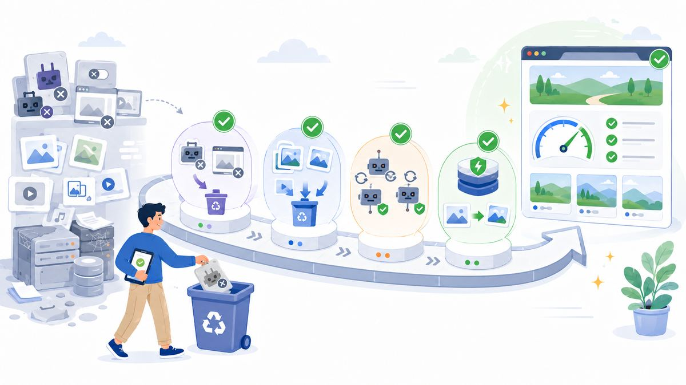
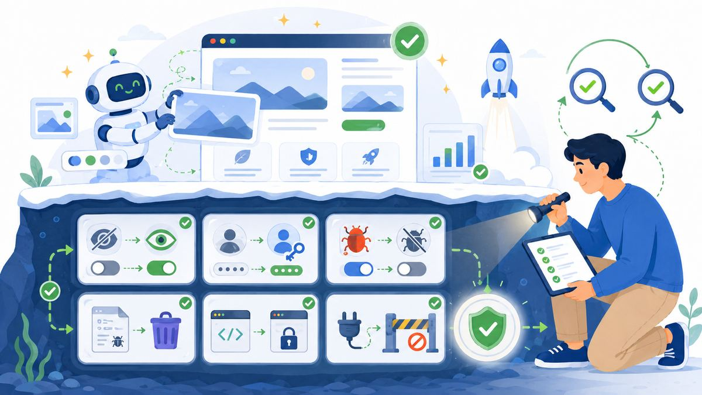
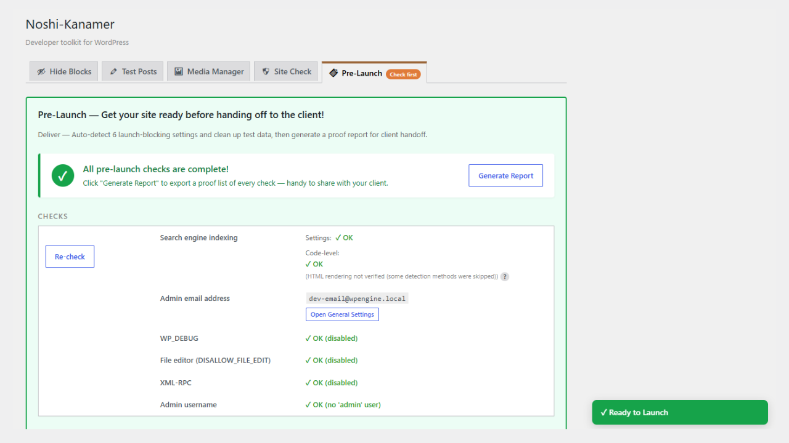
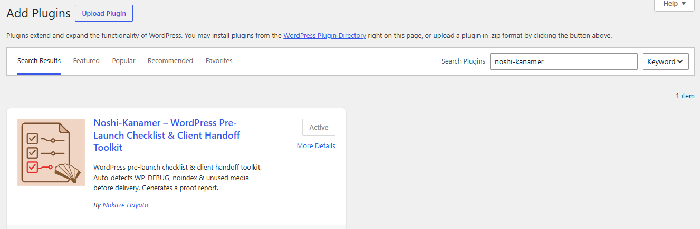

1. Delete test posts, dummy pages, and "Hello World" leftovers.
Every WordPress install starts with sample content, and most builds generate more of it along the way. Search your post list for "test", "sample", and "hello" before you call it done.
WordPress pre-launch checklist
A brand-new WordPress site went live two weeks ago. Google still hasn't indexed a single page. Someone forgot to uncheck "Discourage search engines from indexing this site" after the redesign. One checkbox. It happens so often there are entire tutorials devoted to recovering from it.
Sometimes the mistake is simpler: debug.log sits in /wp-content/, publicly downloadable, quietly collecting database errors and file paths. Automated scanners probe that exact URL on every WordPress site they find, and a simple search still turns up thousands of live logs.
Other times it's a clock nobody notices start ticking. The moment a site goes live, its SSL certificate lands in a public transparency log that bots watch around the clock, and most new domains get discovered within hours. If the admin username is still admin, the attacker already knows half the login before trying a single password, so the attempts against wp-login.php hit five figures by morning.
And the newest version of this story skips WordPress entirely. A founder ships a site built entirely with AI, no hand-written code, and announces it proudly. Two days later he's posting "guys, I'm under attack": API keys exposed in the client-side code, paywall bypassed, and a five-figure API bill by morning. Not WordPress, but the lesson transfers cleanly.
These aren't rare edge cases. They're the same handful of failures repeating across freelancers, agencies, and now AI-assisted builders, because at the end of a long build nobody has the energy to reconstruct a checklist from scratch. So here it is, reconstructed for you: 25 checks, ordered the way you'd actually do them, with the tedious ones automated at the end.
Before anything technical, walk the site the way a first-time visitor would.

Every WordPress install starts with sample content, and most builds generate more of it along the way. Search your post list for "test", "sample", and "hello" before you call it done.
It hides in footers, image captions, and that one tab nobody clicks. A site-wide search for "lorem" takes ten seconds and has saved more reputations than any plugin.
A menu item pointing at a draft returns a 404 for everyone who isn't logged in — and you're always logged in, so you'll never see it yourself.
Someone will hit it eventually. Make sure it offers a way back — search box, home link, anything but a dead end.
Home, contact, and legal pages get the most eyes and the least review. Read them out loud once; your ear catches what your eye skips.
The most expensive launch mistakes are the invisible ones.

Settings → Reading. This is the checkbox from the intro — the one that quietly keeps Google away. Every staging site has it on; every live site must have it off.
Visit yoursite.com/robots.txt and read it. If a staging rule survived the migration, this is where it hides.
Indexing happens eventually without it — but "eventually" is a painful word when a client asks why they can't find their own site.
Settings → Permalinks. If you changed structures during the build, flush the rules so old cached routes don't 404.
At minimum: home, main service or product pages, and contact. These are the words Google shows strangers before they decide whether to visit.
Bots don't wait for your launch party. They found your site the day DNS propagated.

admin username.It's half of every credential pair a bot will try. Create a new administrator with a unique name, log in as it, delete the old one, and reassign content.
Settings → General. Password resets, security notices, and update failures all go there. An unread inbox is a silent alarm.
In wp-config.php, set WP_DEBUG to false. Error messages on a live site hand attackers file paths and version numbers for free.
Turning debugging off doesn't delete the log it already wrote. Check /wp-content/debug.log — remember, scanners check it too.
One line in wp-config.php removes the theme/plugin editor from the dashboard — the first tool an intruder reaches for after a stolen login.
It's a legacy remote-access door that most modern sites never need, and it happily processes thousands of login attempts in batches.
Remove the migration user, the "temp" account, the developer login from three contractors ago. Enable two-factor authentication for every administrator who remains.
Launch day is the last time cleanup is cheap. After launch, everything you left behind becomes "don't touch it, it might break something."

Deactivated plugins still ship exploitable code to your server. If you're not using it, it shouldn't be there.
Test uploads, rejected drafts, five sizes of a logo you replaced in week two. They bloat backups and slow migrations forever.
A plugin that hasn't been updated in years is a door nobody's guarding. Check the "last updated" date on each one before you hand the keys over.
The fastest support ticket to prevent is "the site feels slow." A caching plugin and compressed images cover most of it.
The launch isn't finished when the site works. It's finished when someone else can run it.
A backup you've never restored is a hope, not a backup. Do one full cycle before handoff day.
No passwords in email threads. Use a password manager's sharing feature or a one-time secret link, and change anything that was shared insecurely during the build.
Which plugins are premium? Whose account renews them? Where's the hosting billed? Six months from now, this one page will answer every panicked call.
A dated record of what you verified protects both sides: the client knows the work was done, and you have proof it was done when questions come later. This is the step almost everyone skips — and the one that turns a launch from "I think it's fine" into "here's what we checked."
Let's be clear first: modern AI site builders and coding assistants are genuinely remarkable. If AI helped you ship a site that looks professional and works, that's not something to apologize for. Five years ago, the same result took a team.

But there's a structural blind spot, and it's not the AI's fault: AI does what you ask. Launch safety is made of things nobody asks for.
Nobody prompts "change the default admin username." Nobody prompts "make sure debug logging is off in production," or "lock the file editor," or "close XML-RPC." These aren't features. They're the absence of problems, so they produce no visible change on the page, so they never make it into a prompt, so they never happen. An industry study found nearly half of AI-generated code samples contained security weaknesses, not because the AI is careless, but because safety constraints weren't in the request.
If your site came from an AI builder or a vibe-coding session, the checklist above isn't optional reading. Items 6, 11, 13, 14, 15, and 16 are precisely the invisible ones. Go through them once. It costs twenty minutes, most of it copy-paste.
And if you'd rather have a machine double-check the machine, that's fair. It's what the next section is for.
Modern AI site builders are remarkable at generating pages. They're not designed to know what your site should look like on launch day. That's what this checklist, and Noshi-Kanamer, is for.
Twelve of the twenty-five checks above get a hand from Noshi-Kanamer.
Noshi-Kanamer is a free WordPress plugin that runs the mechanical half of this checklist for you. Install it, open the Pre-Launch tab, and it automatically detects:
admin username (item 11)WP_DEBUG left on (item 13)debug.log present on the server (item 14), with one-click deletionDISALLOW_FILE_EDIT not set (item 15)It also handles the cleanup actions: bulk-delete its own test posts (item 1), flush rewrite rules (item 9), and find unused media (item 19). The Site Check tab flags plugins that haven't seen an update in years, giving you a head start on item 20.
And for item 25, the evidence, there's Generate Report: a plain-text summary of every check and its result, dated, ready to paste into a handoff email or archive with the project. You don't need to know PHP or wp-config.php. Noshi-Kanamer checks all 7 items automatically and prints a report you can save.

The other thirteen are the ones no plugin can do for you: writing a meta description, proofreading a page, deciding whether a permalink reads well. That's not a gap. It's just what's left once the mechanical checks are handled. Server-side detection and writing judgment are different jobs, and this page still needs you for the second one.
From your WordPress dashboard: Plugins → Add New → search "noshi" → Install → Activate. That's the whole thing — under a minute, no files to move.

(You can also download the zip from the plugin page and drop it into wp-content/plugins/ if that's your style — but the search box above is almost certainly faster.)
Once activated, look for Noshi-Kanamer in your sidebar and open the Pre-Launch tab.
Working with agencies and AI-assisted developers, I keep hearing the same request: "Can I hand this report to my client on their letterhead, in PDF, as formal proof of QA?" Or, quieter: "Can I save this somewhere, so if anything ever happens, I have proof I checked?"
That's what I'm building next: AI Site Safety Report — Client Handoff Edition. Branded PDF export, per-item pass/fail notes, a signature line, and (for AI-assisted builds) a plain-language "what was checked and why it matters" summary you can hand to a non-technical stakeholder.
Planned as a one-time $19 purchase: no subscription, use it on every launch, expense it to a project.
If that would save you an hour on your next handoff, or just buy you a night of better sleep, leave your email below and I'll write to you once when it ships. No drip campaign, no newsletter, just the release note.
This checklist is maintained by the developer of Noshi-Kanamer and updated as WordPress evolves. Found a check that should be here? Tell me — the whole point is that nobody should have to rebuild this list from scratch again. This page pairs with my pre-launch checklist article on dev.to.